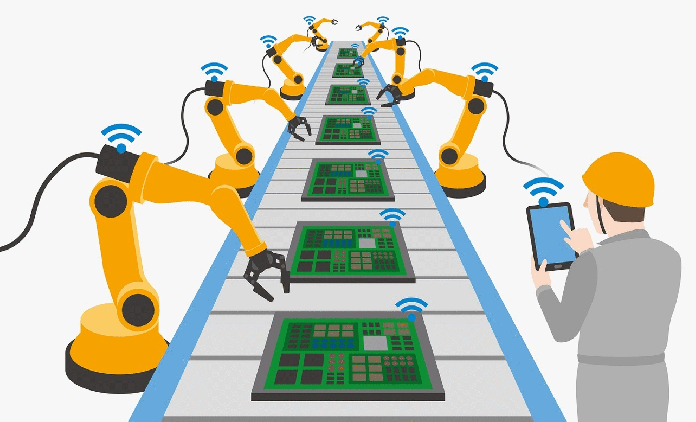

Home Page
Industry 4.0 and the Future of Industrial Engineering
Industry 4.0 represents the fourth industrial revolution, combining digital technologies with traditional manufacturing to drive smarter and more efficient operations.
Core Technologies
1. Internet of Things (IoT)

- Connects machines, systems, and sensors for real-time data exchange.
- Improves decision-making and predictive maintenance.
Helps To:
- Reduce downtime
- Monitor asset health
- Increase responsiveness
2. Artificial Intelligence and Machine Learning
- Enable systems to learn and improve over time.
- Support autonomous decision-making.
Used for:
- Predictive analytics
- Process automation
- Quality control
Integration of Smart Technologies
- Improved data visibility
- Real-time feedback loops
- Reduced human error
Organizational and Workforce Transformation
3. Digital Skill Development
- Upskilling employees for tech-enabled environments
- Encouraging innovation and adaptability
- Aligning education with future needs
4. Agile and Connected Operations
- Flexible production systems
- Collaborative supply chains
- Faster response to market changes
Case Studies: Real-World Integration

Case Study 1: Automotive Manufacturer
Actions Taken:
- Implemented IoT across assembly lines
- Used AI for defect detection
Outcomes:
- 25% reduction in defects
- More efficient resource use
Case Study 2: Electronics Production Firm
Actions Taken:
- Adopted cloud-based manufacturing systems
- Integrated supply chain data with real-time dashboards
Outcomes:
- Shorter delivery times
- Improved collaboration across teams
Conclusion
Industry 4.0 transforms the manufacturing world by blending intelligence, automation, and connectivity. Industrial engineers are at the forefront of this shift, ensuring that systems remain efficient, adaptable, and competitive in an ever-evolving market.